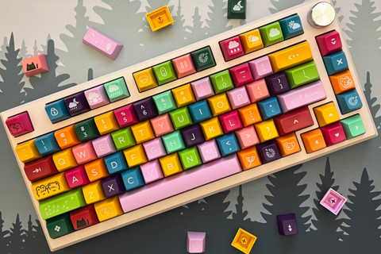

Blog
FL MK750 - HƯỚNG DẪN SỬ DỤNG PHÍM TẮT VÀ CÀI ĐẶT PHẦN MỀM
Lại một sản phẩm cực kỳ chất lượng đến từ nhà sản xuất FL - Esports, MK750 là chiếc phím mới nhất thiết kế với layout 75% và núm xoay phổ biến nhất trong thế giới phím cơ hiện nay. Kicap cũng vinh dự khi là một trong những nhà bán lẻ trực tiếp sản phẩm này. Vậy thì sử dụng MK750 như nào cho hiệu quả, cài đặt phầm mềm ở đâu, cần mods phím như nào cho hợp lý? Kicap sẽ giải đáp từng thắc mắc của các bạn theo từng phần nhé!
Khi không sử dụng, bàn phím sẽ tự động tắt LED sau 120s và tự động ngủ sau 10 phút. Để đánh thức, bạn chỉ cần gõ vào phím bất kỳ là được. Cách để xem % pin ngay trên bàn phím của mình: chỉ càn bật LED và giữ tổ hợp phím: FN + BACKSPACE sẽ thấy đèn của dãy phím số sáng, sáng đến số nào thì % pin hiện tại chính là số đó x 10. Ví dụ sáng đến số 8 là 80% còn số 0 là 100% đó. Trong quá trình sử dụng, khi bạn thấy đèn báo BACKSPACE chuyển qua màu đỏ, bạn nên sạc bàn phím ngay khi có thể để đảm bảo chúng hoạt động ổn định và tăng tuổi thọ của pin. Khi pin quá thấp, bàn phím sẽ dừng hoạt động chỉ có phím backspace màu đỏ và không thể sử dụng bất cứ phím nào khác nha. Khi pin được sạc đầy, đèn báo ở nút BACKSPACE sẽ chuyển sang màu của chế độ LED hiện tại, bạn có thể rút sạc ra nhé. Tips nhỏ để check dung lượng pin còn lại thông qua kết nối Bluetooth, bạn vào cài đặt bluetooth và tìm thiết bị bàn phím của bạn sẽ thấy thông số pin đó. Lưu ý: luôn luốnạc bàn phím thông qua cổng USB của máy tính, không sạc bằng cái củ sạc khác như sạc dự phòng, sạc laptop, tai nghe, điện thoại v.v